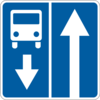

1
2
3
4
5
6
7
8
9
10
11
12
13
14
15
16
17
18
19
20
21
22
23
24
25
26
27
28
29
30
31
32
33
34
17. Преимущества маршрутных транспортных средств
17.1.
На дороге с полосой для маршрутных транспортных средств, обозначенной дорожным знаком

5.8
или
5.11
(см. приложение 1), запрещаются движение и остановка других транспортных средств на этой полосе.
17.2.
Водитель, поворачивающий направо на дороге с полосой для маршрутных транспортных средств, отделенной прерывистой линией дорожной разметки, может выполнять поворот с этой полосы. В таких местах разрешается также заезжать на нее при выезде на дорогу и для посадки или высадки пассажиров у правого края проезжей части.
17.3.
Вне перекрестков, где трамвайные пути пересекают полосу движения нерельсовых транспортных средств, преимущество предоставляется трамваю (кроме случаев выезда трамвая из депо).
17.4.
В населенных пунктах, приближаясь к автобусу, микроавтобусу или троллейбусу, начинающему движение от обозначенной остановки, расположенной в заездном «кармане», водители прочих транспортных средств обязаны уменьшить скорость, а при необходимости остановиться, чтобы дать возможность маршрутному транспортному средству начать движение.
17.5.
Водители автобусов, микроавтобусов и троллейбусов, подавшие сигнал о намерении начать движение от остановки, должны принять меры для предотвращения дорожно-транспортного происшествия.